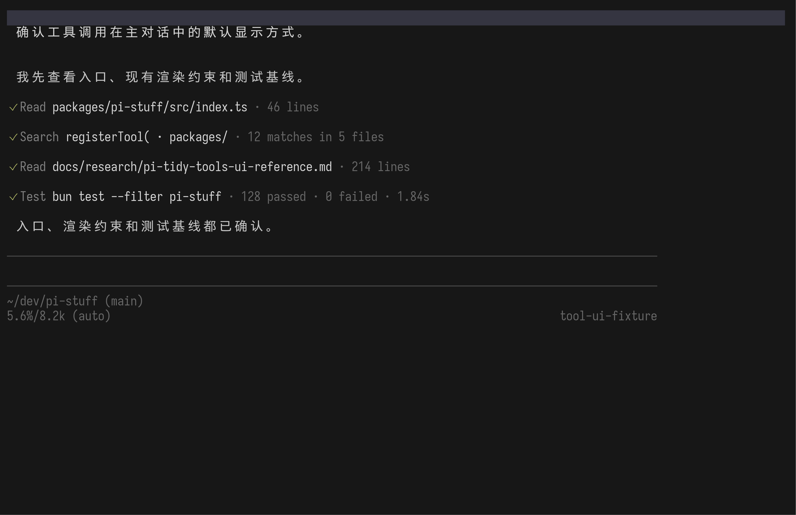
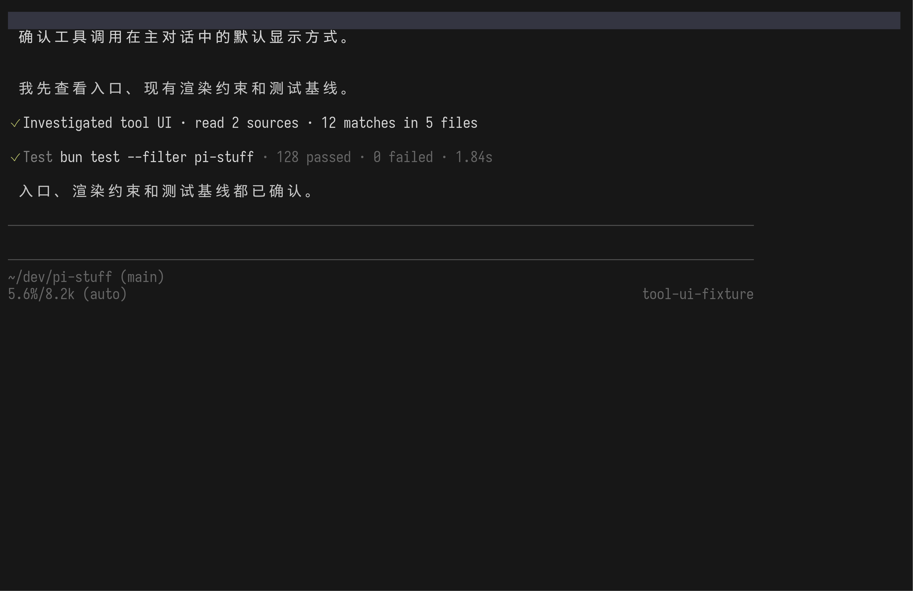
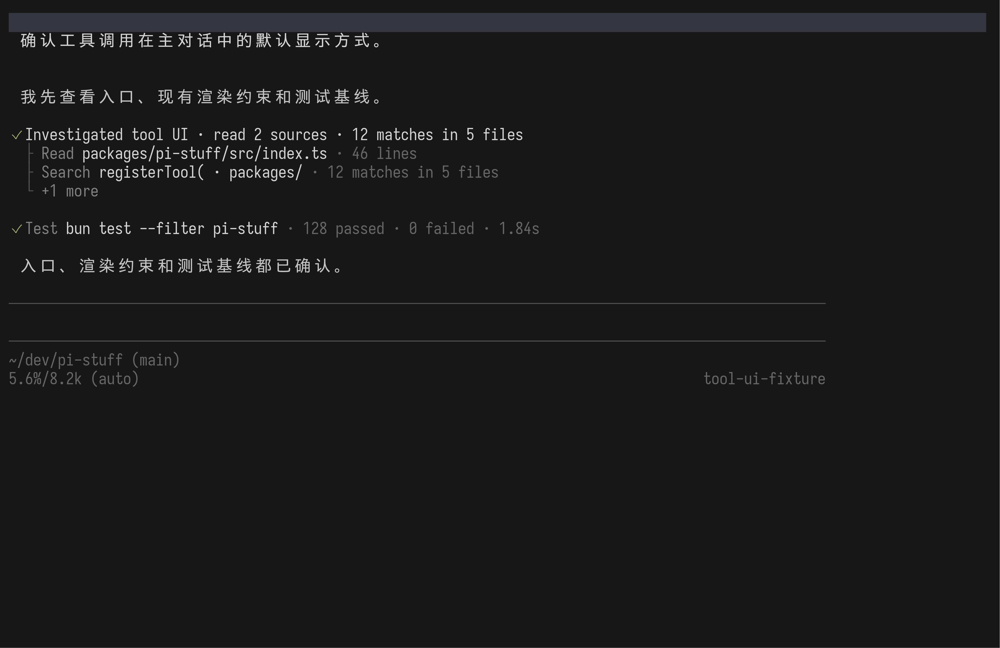
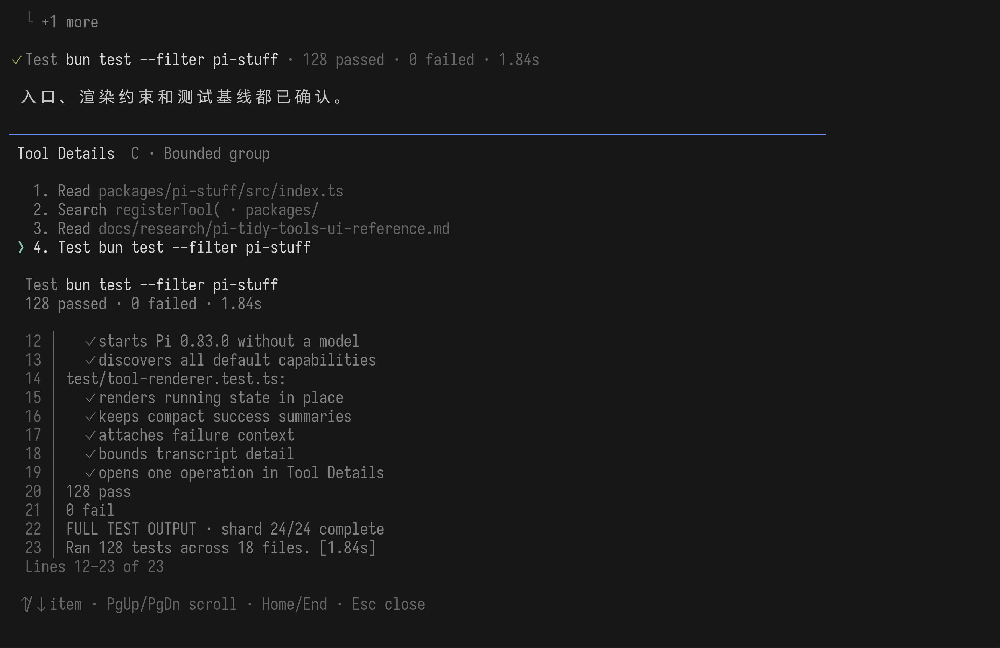

01
统一接管
Read、search、shell、编辑、网页读取及 Suite 内其他工具，都使用同一种状态和文字层级。
工具能力不变，只比较用户最后在对话里看到什么：每次调用逐条留下、一次探索只留一个摘要，或摘要下最多保留两条线索。
Pi Stuff 默认包含的工具先进入同一套渲染。名称、运行中、成功、失败、简要结果与完整结果都遵守共同规则；A / B / C 不会各自发明一套工具 UI。
Read、search、shell、编辑、网页读取及 Suite 内其他工具，都使用同一种状态和文字层级。
紧凑只改变默认阅读密度，不删除调用、错误或完整输出；需要时仍能逐项检查。
失败、需要用户处理以及产生修改的动作保持清楚归属，不藏进一句“已探索”。
三张 PNG 使用相同 fixture、相同 100 × 32 terminal grid 和相同工具结果：前三次 read / search / read 属于一次探索，最后一次 baseline test 因为会实际执行代码而始终单独显示。只有 transcript 的组织方式不同。
read、search、read 和 baseline test 各留一条，共四条。每次调用都容易定位，但探索变长时，对话也会被工具过程拉长。

真实 PTY 截图尚未捕获。./artifacts/pi-0.83-tool-ui-individual.png调用和记录一一对应，用户不用猜一次摘要里包含了什么。
连续读取和搜索会占据较多垂直空间，尤其是长 session。
失败和修改天然能贴着具体工具，不需要再解释分组边界。
前三次 read / search / read 只留下包含来源数和命中数的语义摘要；baseline test 仍单独留一条。主对话最干净，但用户必须进入 Tool Details 才知道探索具体看过什么。

真实 PTY 截图尚未捕获。./artifacts/pi-0.83-tool-ui-grouped.png工具过程几乎不打断回答，长 session 的阅读成本最低。
默认看不到具体文件和搜索词，摘要文案必须足够可信。
Tool Details 必须快速打开，并准确恢复组内每一次原始调用。
探索摘要下面保留两次代表调用，再显示“+1 more”；baseline test 仍单独留一条。用户能快速判断探索方向，又不会让所有调用铺满对话。

真实 PTY 截图尚未捕获。./artifacts/pi-0.83-tool-ui-bounded.png不用离开对话，也能看见 Agent 主要检查了什么。
无论组内有三次还是五十次调用，默认最多显示两条子记录。
必须明确哪两条值得露出，避免让选择规则显得随机。
截图完成后，应先按下面四个问题评审，再讨论具体颜色、符号或缩进。
| 观察点 | A · 逐条 | B · 单摘要 | C · 最多两条 |
|---|---|---|---|
| 扫读回答 | 过程清楚，但最占空间 | 最容易直接读正文 | 保留方向感，空间有上限 |
| 知道看过什么 | 无需额外动作 | 必须打开详情 | 先看到两条代表线索 |
| 长 session | 工具记录持续累积 | 默认最短 | 长度可预测 |
| Test / 失败 / 修改 | 始终独立可见 | 不收入探索摘要 | 不收入探索分组 |
A / B / C 共用同一个 Tool Details Command Dialog。它不是第四种 transcript 方案，而是检查单次调用完整结果的共同入口。
Tool Details 出现在对话分隔线以下，临时接管原 editor 区域；它不覆盖 transcript，不做居中弹窗、四周边框、阴影或背景遮罩。打开时普通输入区与普通 statusline 暂时隐藏，Esc 后原样恢复。

真实 PTY 截图尚未捕获。./artifacts/pi-0.83-tool-details-dialog.png原型用 Ctrl+O 打开最近的工具记录。Pi 也把它用于全局展开和 tree filter，因此最终键位仍待确认。
同一位置列出相关工具记录；↑/↓ 选择一项，下方结果随选择更新。
只渲染当前一项的完整输出，并在同一块区域滚动。
Esc 一次关闭界面并恢复普通 editor 与 statusline；对话不跳动。
报告骨架完成不等于设计完成。四张截图都满足以下条件后，才进入视觉评审。
这次只选择默认密度。Tool Details 的具体快捷键、颜色、每种工具的摘要文案与分组规则，将在方向确认后分别验证。
{kind=link}